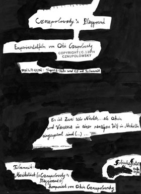

Cznupolowsky's Playground

Okin Cznupolowsky – Germany 2014 – 3 min.
M: Okin Cznupolowsky – K: Okin Cznupolowsky, Jakob Schreier
D 2014
Super-8 auf digital
Deutsch
A sentimental, delightful journey along the former railway route „Porečanka“ that connected Trieste and Poreč from 1902 until 1935. Then it was dismantled and the tracks to be used in Mussolini's war in Abessiniya but they sank in the Mediterranean – an ironic turn of history, an ideal subject for Karpo Godina, the master of tender wit.
Tuesday 14/10 10.30 p.m. Werkstattkino
Okin Cznupolowsky, born in 1985 in Munich. He studies painting and grafic arts at the Academy of Arts, Munich.
Films (selection): Chiogga 2004 – Jaegerin am Ufer 2013 – Kolyma Beach, second act 2014 – Okin Cznupolowsky's farbenvrohe Welt der Fohlen (fragment)